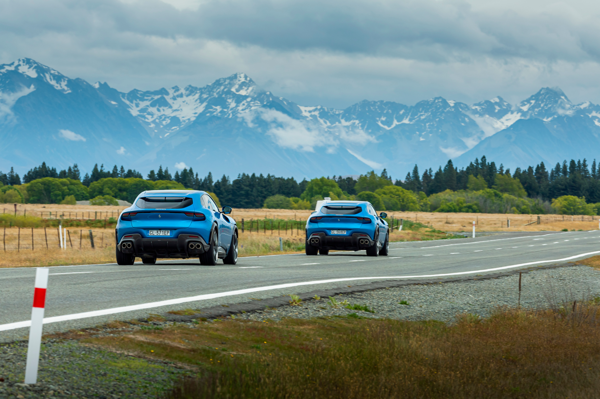
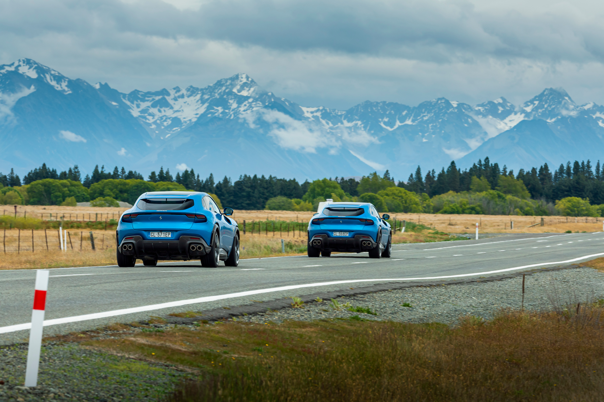

FERRARI PUROSANGUE: GRAND TOUR OF NEW ZEALAND CONCLUDES
The Ferrari New Zealand Grand Tour, which saw the Maranello marque embark on a voyage of rediscovery of the spectacular Southern Hemisphere islands between late November and early December, has now come to a successful conclusion. Five Ferrari Purosangues each covered 3000 km over three weeks as they explored New Zealand’s extraordinary natural landscapes, scenic mountain roads and culture-rich cities.
The Purosangue was chosen for this ground-breaking tour because it represents a new standard in the automotive industry, thanks to its innovative take on the modern, high-riding, four-door GT car. Many Ferraris have made combining benchmark performance with first-class comfort one of the pillars of their success, but the Purosangue takes that to a new level. With its 725 cv, mid-front-mounted V12 it truly brings together the best in terms of driving thrills, comfort and refinement - courtesy of its spacious and luxurious four-seat interior - and sports car handling thanks to its world-first active suspension system and uncompromising transaxle layout.
The Tour gave 50 international journalists a first-hand experience of the Ferrari Purosangue’s prowess as they shared duties behind the wheel on different legs of a route that criss-crossed the two islands, leaving the motorways surrounding Auckland behind on the way to the spectacularly dynamic roads of the Southern Alps.
Having left Auckland, which is both the country’s financial capital - and its largest city with a population of over 1.5 million - the group first headed for the golden sands of Waihi Beach before moving on to Tuaranga to explore iconic Mount Maunganaui, an extinct volcano sacred to the Maori people that dominates the shores of the Bay of Plenty.
The second day of the tour saw the convoy of cars reach Rotorua, home to one of the world’s most active geothermal fields. There, they discovered Maori culture and the huge variety of local fauna, including the iconic Kiwi, New Zealand’s symbol. The group then continued on towards beautiful Taupo, an area of green hills with magnificently dramatic views of the lake of the same name.
The next day, the group headed for the coastal town of Hastings where they visited the Whakarewarewa Forest Park and admired its imposing trees. In heavy rain, they also traversed the iconic Gentle Annie road, which winds through the inland hills of the North Island. A tough challenge that the Purosangue lapped up with absolute ease.
The fourth leg of the Tour saw the group driving to Wellington, New Zealand’s capital, through the stunning vineyards of the famous Martinborough wine-growing region. The visit to Wellington also provided the perfect opportunity to tour the workshop that has produced sets and costumes for some of the most famous and award-winning fantasy and science fiction films ever made, many of which were also set in the archipelago’s extraordinary natural landscape.
The cars were then transported by ferry to the South Island where the tour set out again from the little town of Blenheim to explore one of the world’s most renowned wine-growing areas, Marlborough. Once they got to the coastal city of Kaikoura, the participants were treated to an aerial view of the wonderful marine life of the South Pacific Ocean, including whales and dolphins aplenty. A special and unexpected evening meeting with a 166 Inter from 1948, the fourth road car ever produced, proved a very moving occasion and served as a timely reminder of the Prancing Horse’s unparalleled ability to create a sense of belonging and emotional impact amongst its enthusiasts, something it has done for over 76 years.
 
